Create project, package, Class for Selenium
1. Open Eclipse
2. Select any eclipse project path. Check below image.
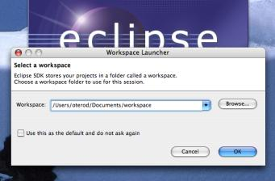
3. It should navigate to Eclipse landing screen. If you see 'Workbench' image then
click on it.
4. We should see below screen.
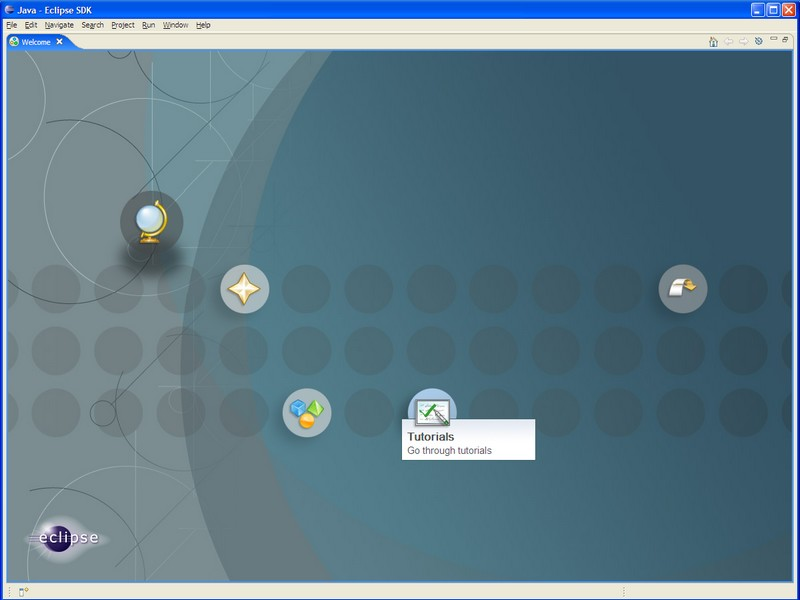
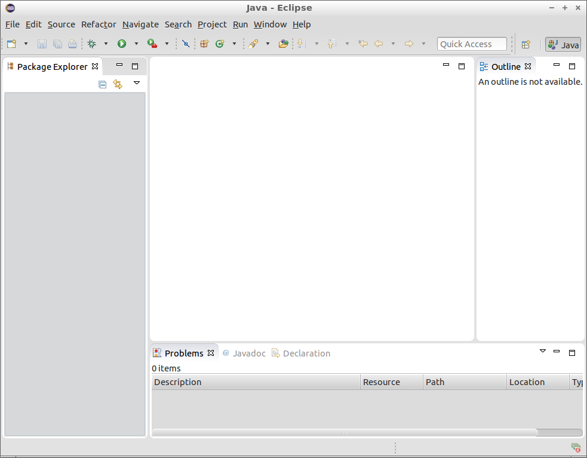
5. Select new button from left top section as shown in below image.
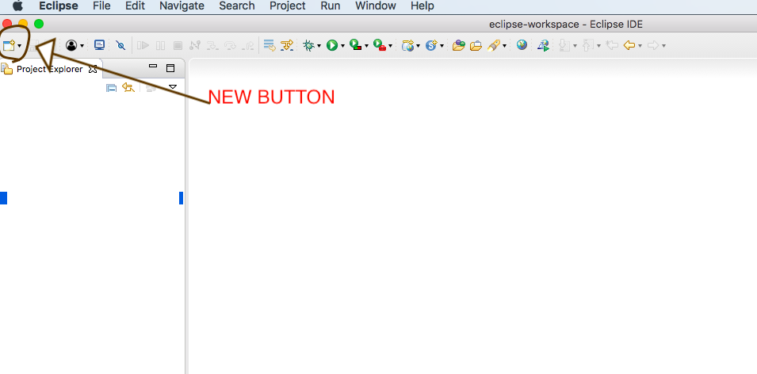
6. Select JAVA PROJECT and click NEXT button as shown in below image.
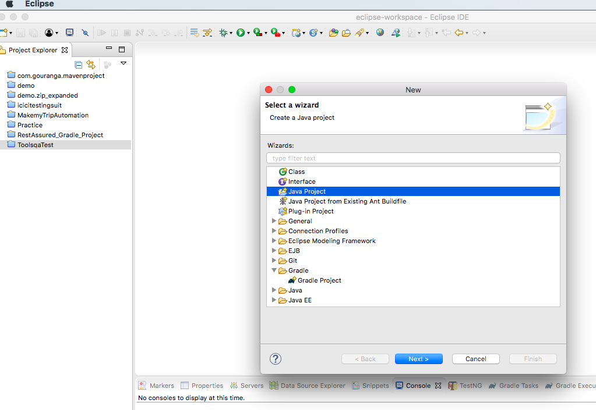
7. Give any project name , we are giving project name "manual2Automation".
Click on Finish button. Check below pic.
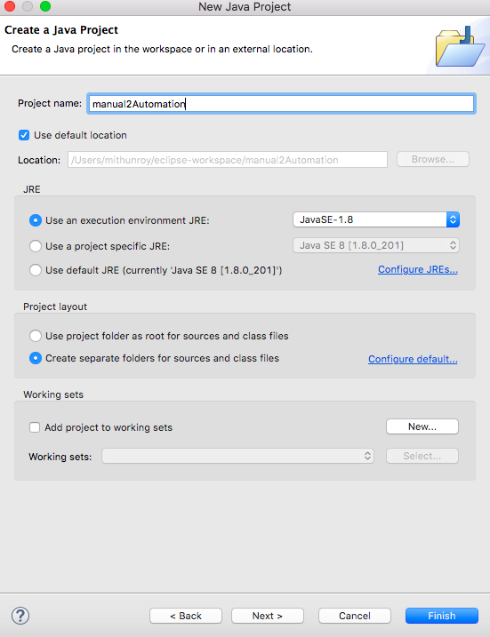
8. Now my project is created and it will display as below screenshot.
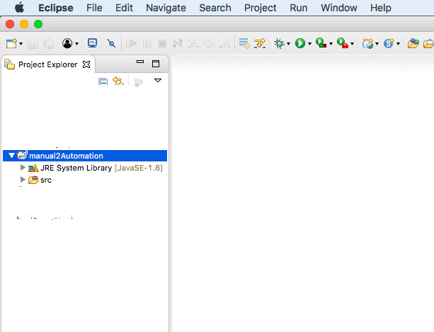
9. Right click on project -> new -> package. Give package name [In our case m2Apackage] and
finish it.
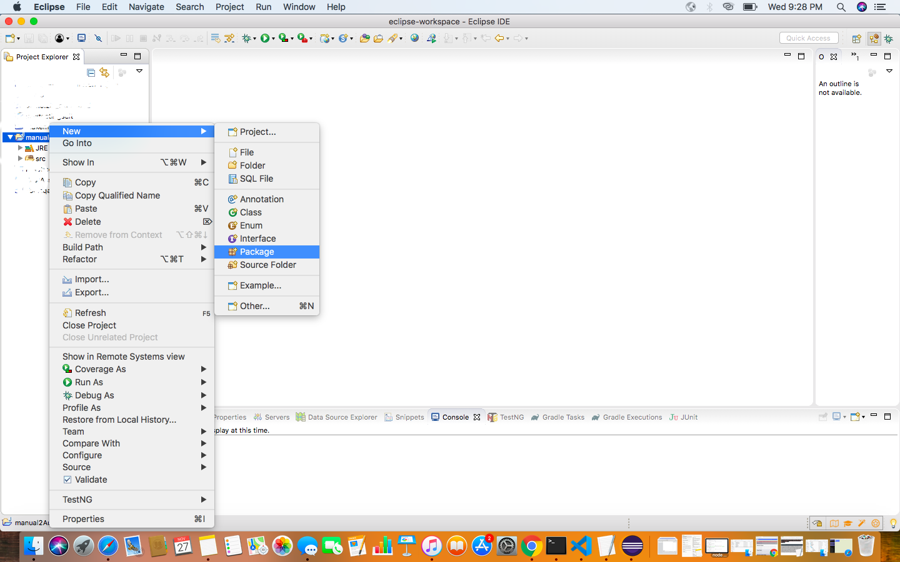
10. Right click on package -> new -> class. Give class name [In our case mM2Aclass] and
finish it.
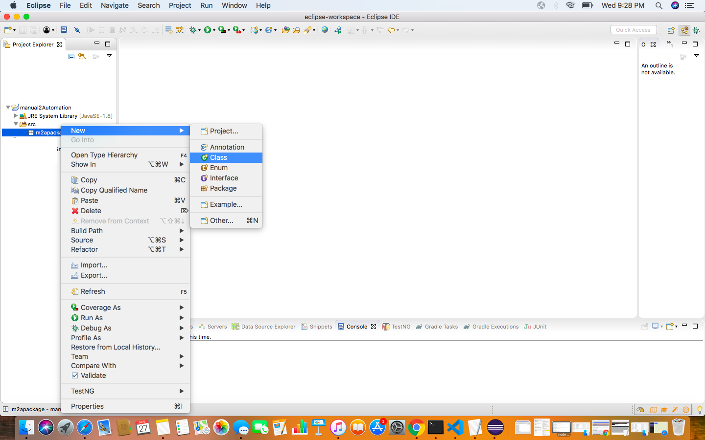
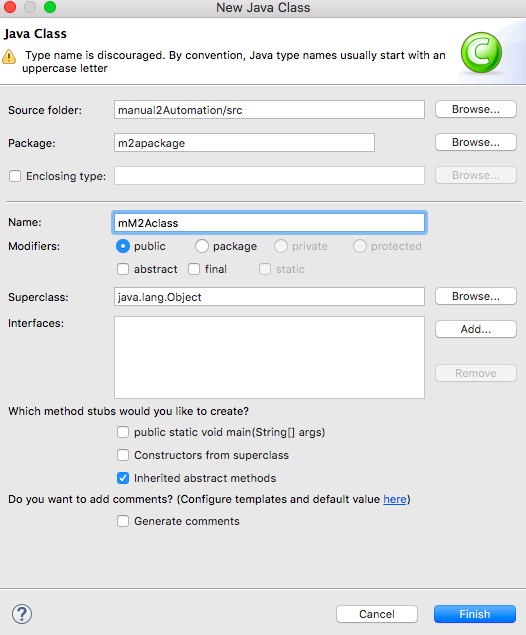
11. Once Class is create , we should see below screen with Class structure.
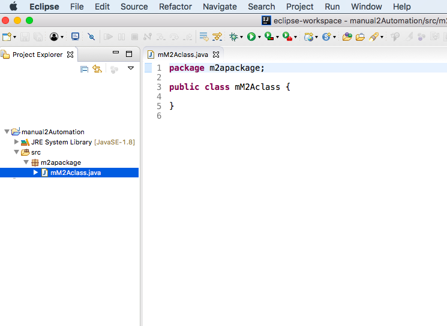
12. We are all set before start first selenium project